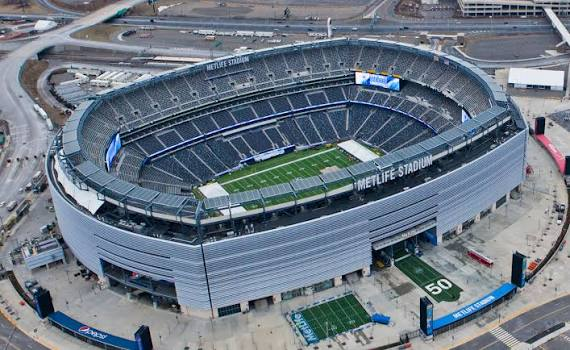

O jogo | Como chegaram lá | O resultado
Voltar para a página principal

Foi a primeira vez na história que dois campeões continentais em exercício se enfrentaram em uma final de Copa: a Espanha como campeã da Eurocopa e a Argentina como campeã da Copa América e atual campeã do mundo.
Ficou no Grupo H, com Cabo Verde, Arábia Saudita e Uruguai. Terminou em primeiro com 7 pontos.
Chegou à final como atual campeã do mundo e melhor seleção das Américas no torneio. Passou por um susto nas oitavas, Cabo Verde por 3 a 2 na prorrogação
Espanha e Argentina se enfrentaram 14 vezes desde 1952, com seis vitórias para cada lado. Em Copas do Mundo, só haviam se cruzado uma vez: em 1966.
Campeão da Copa do Mundo de 2026: ____Espanha________
Placar da final: ____1x0________
Preencha aqui com o resultado do jogo que você assistiu.
Página principal | O Brasil na Copa | Cidades-sede | Curiosidades